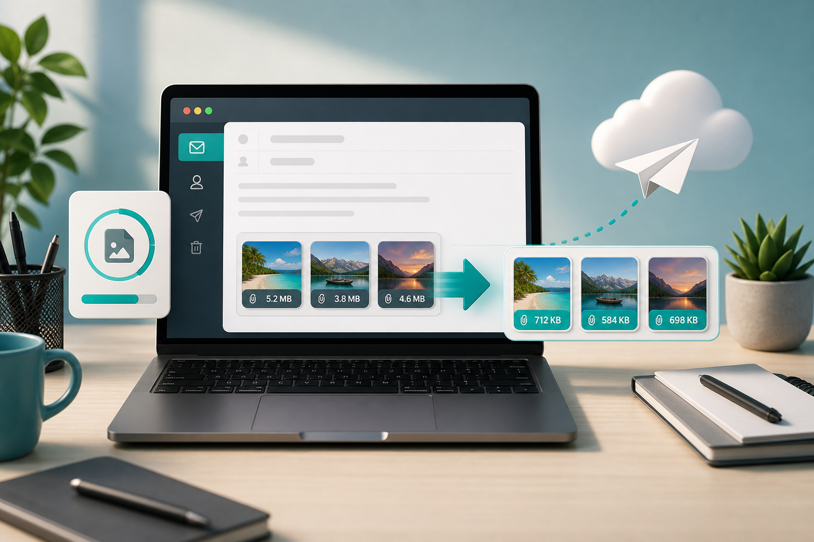

Email images
Compress image for email attachments.

Email is still one of the most common reasons people need to reduce image size. A few phone photos can make a message heavy, slow to upload, or annoying for the recipient to download. Some mail systems also have attachment limits, especially when several files are included.
The first question is whether the recipient needs full resolution. If you are sending images for printing, professional editing, or official records, do not compress too aggressively. If you are sending a preview, proof, receipt photo, product example, or quick reference image, a smaller version is usually better.
For normal photos, resize before attaching. A width between 1200 and 2000 pixels is enough for many email uses. That is still large enough to view clearly on a laptop, but far smaller than a full camera image. Then save as JPG around 70 to 80 percent quality. If the image is a screenshot with text, keep quality higher and check readability.
For multiple images, compress them as a batch with similar settings. This saves time and keeps the message size predictable. If one image is a document scan or contains important text, handle it separately. Mixed batches can be risky because a setting that works for photos may damage text-heavy screenshots.
File names matter in email. Use descriptive names like invoice-photo-compressed.jpg or product-sample-1.jpg. Recipients are more likely to understand and save files correctly when names are clear. Avoid sending huge original files named only with camera numbers unless the recipient asked for originals.
Use the free online image compressor to prepare email images in your browser. For photos, the JPG compressor is usually the right choice. For documents and strict limits, see reduce image size in KB online.
If you are sending images to a client, teacher, recruiter, or support team, think about what they need to do with the file. A support agent may only need to read an error message. A client may need to approve a visual direction. A recruiter may need to confirm an ID-style photo. In all of those cases, a clear compressed image is better than a huge original that slows down the conversation.
For screenshots, do not compress them like photos. Keep text readable, crop away irrelevant desktop space, and use PNG or WebP when sharp edges matter. If you attach a screenshot to explain a problem, the recipient should be able to read the message without zooming awkwardly. Our guide to compressing screenshots without blur covers that workflow in more detail.
For email newsletters, the stakes are slightly different. Images should be light enough for quick loading and narrow enough for the email layout. Very wide images may be scaled down by the email client, wasting file size. Prepare the image at the approximate display width, compress it, then send a test email to yourself before sending it to a list.
One common mistake is compressing a group of images, placing them in a ZIP file, and assuming the email will be easier to handle. ZIP files are useful for organization, but they do not always make already-compressed JPG images much smaller. It is usually better to resize and compress the images themselves first, then zip only if you need a single package.
Keep the original file on your device. Email versions are usually delivery copies, not master files. Compress enough to make the email easy to send, but not so much that the recipient cannot understand what they are looking at.
Sources and further reading
- web.dev image performance explains the relationship between dimensions, format, and file size.
- Gmail Help is useful for checking current email attachment behavior and limits.